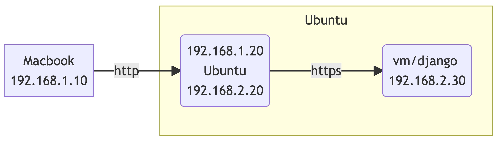

使用 frp 反向代理 https 网站
家里一台苹果本，一台 Ubuntu 台式机，Ubuntu 上跑个虚拟机，运行 Django 程序。苹果本和台式机在同一个局域网，需要从苹果本访问台式机的虚拟机里的 Django 程序。

搜索后，发现 frp 可以满足这个需求。根据官方介绍，frp 是一个专注于内网穿透的高性能的反向代理应用，支持 TCP、UDP、HTTP、HTTPS 等多种协议。可以将内网服务以安全、便捷的方式通过具有公网 IP 节点的中转暴露到公网。
frp 分为两个程序， frps 运行在服务端，frpc 运行在客户端
frps on Ubuntu
在 Ubuntu 上配置 frps.ini
[common]
bind_port = 7000
vhost_http_port = 8080
启动
frps -c frps.ini
frcp on Ubuntu VM
在 Ubuntu VM 上配置 frcp.ini
[common]
server_addr = 192.168.1.20
server_port = 7000
[django]
type = http
custom_domains = 192.168.1.20
plugin = http2https
plugin_local_addr = 192.168.2.30
plugin_host_header_rewrite = 192.168.2.30
plugin_header_X-From-Where = frp
启动
frpc -c frpc.ini
在 macbook 打开 chrome，访问 http://192.168.1.20:8080
问题
- Origin checking failed - http://192.168.1.20:8080 does not match any trusted origins.
在 django 程序的 settings.py 设置
CSRF_TRUSTED_ORIGINS = ['http://192.168.1.20:8080']
- CSRF cookie not set
通过 curl 查看 reponse header 的 Set-Cookie 部分，curl -IL http://192.168.1.20:8080
Set-Cookie: csrftoken=xxxtoken; expires=Thu, 17 Aug 2023 14:27:11 GMT; Max-Age=31449600; Path=/; SameSite=Lax; Secure
或者用 chrome dev tools 查看
This attempt to set a cookie via a Set-Cookie was blocked because it had the “Secure” attribute but was not received over a secure connection.
提示得很清楚了，因为我们用的是 http 协议访问，所以浏览器不能保存 cookie。
在 django 程序的 settings.py 设置
CSRF_COOKIE_SECURE = False